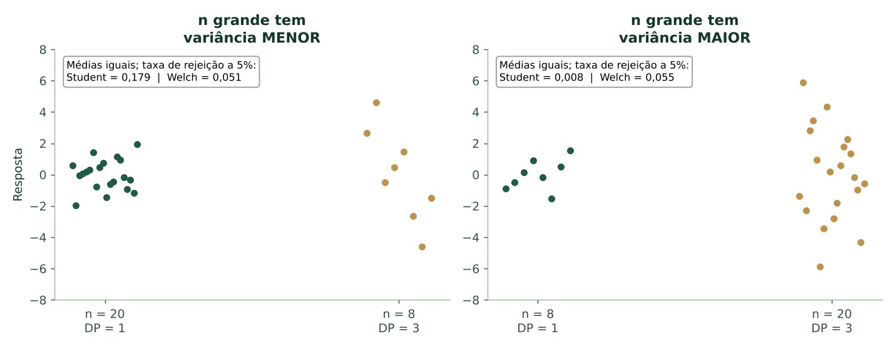
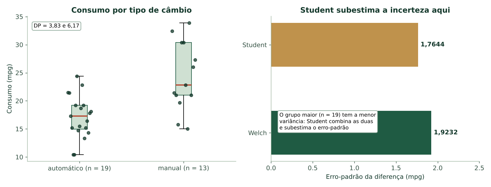

Teste t de Welch (dois grupos)
Compara as médias de dois grupos independentes sem supor que tenham a mesma variância.
Comece por aqui
O teste t de Student supõe que os dois grupos têm a mesma variância, e combina as duas estimativas em uma só. Quando essa suposição falha — e ela falha com frequência —, o teste pode errar bastante, principalmente se os grupos tiverem tamanhos diferentes. O teste de Welch resolve o problema de forma simples: cada grupo entra na conta com a sua própria variância.
Quando as variâncias são realmente iguais, Welch perde muito pouco poder em relação a Student. Quando não são, Student pode rejeitar muito mais (ou muito menos) do que os 5% prometidos. Diante dessa assimetria de riscos, vários autores recomendam Welch por padrão (DELACRE; LAKENS; LEYS, 2017; RUXTON, 2006) — e é o que o R faz.
O que é o teste
A diferença em relação ao teste de Student está em dois pontos. Primeiro, o erro-padrão da diferença não combina as variâncias: cada grupo contribui com \(s_i^2/n_i\). Segundo, os graus de liberdade não são \(n_1+n_2-2\), mas um valor fracionário calculado pela fórmula de Welch–Satterthwaite, que fica entre o menor \(n_i-1\) e \(n_1+n_2-2\).

Com grupos de mesmo tamanho (\(n_1=n_2\)), a estatística \(t\) é idêntica nos dois testes; só os graus de liberdade mudam, e pouco. O problema aparece quando os tamanhos são diferentes.
Pressupostos e como verificá-los
| Pressuposto | Por que importa | Como verificar |
|---|---|---|
| Grupos independentes | Pressuposto mais grave quando violado. | Delineamento; medidas repetidas pedem o teste pareado. |
| Normalidade em cada grupo (ou n grande) | Define a distribuição de referência. | Shapiro–Wilk e Q–Q por grupo; com n acima de 30 o teste é robusto. |
| Variâncias iguais | Não é exigida: é exatamente a vantagem do método. | — |
| Variável quantitativa | O teste compara médias. | Natureza da variável. |
| Ausência de valores extremos influentes | A média e a variância são sensíveis. | Boxplot; considere o teste de Yuen. |
Decidir entre Student e Welch a partir de um teste de variâncias é uma escolha em duas etapas que infla a taxa de erro tipo I, exatamente como o uso do Shapiro–Wilk como porteiro. Escolha Welch antes de ver os dados.
Hipóteses e estatística de teste
Em que:
- \(\bar x_i,\ s_i^2,\ n_i\)
- média, variância amostral e tamanho do grupo i
- \(\nu\)
- graus de liberdade de Welch–Satterthwaite, em geral não inteiros
- \(t\)
- estatística de teste, comparada a uma distribuição \(t\) com \(\nu\) graus de liberdade
Exemplo numérico, passo a passo
Dados do exemplo: automáticos com \(n_1=19\), \(\bar x_1=17{,}147\) e \(s_1^2=14{,}699\); manuais com \(n_2=13\), \(\bar x_2=24{,}392\) e \(s_2^2=38{,}026\).
| Passo | Cálculo | Resultado |
|---|---|---|
| Contribuição de cada grupo | 14,699/19 e 38,026/13 | 0,7736 e 2,9251 |
| Erro-padrão | √(0,7736 + 2,9251) | 1,9232 |
| Estatística de teste | (17,147 − 24,392) / 1,9232 | t = −3,7671 |
| Graus de liberdade | (3,6987)² / [0,7736²/18 + 2,9251²/12] | ν = 18,332 |
| Valor-p | 2 × P(t₍₁₈,₃₃₎ ≤ −3,7671) | 0,00137 |
| Intervalo de confiança | −7,245 ± 2,100 × 1,9232 | [−11,280; −3,210] |
Variância combinada: \(s_p^2=\dfrac{18\times14{,}699+12\times38{,}026}{30}=24{,}030\); erro-padrão \(=1{,}7644\).
\(t=-7{,}245/1{,}7644=-4{,}1061\), com 30 graus de liberdade ⇒ \(p=0{,}000285\).
O erro-padrão de Student é menor (1,764 contra 1,923) porque o grupo mais numeroso, com a menor variância, domina a variância combinada. Como ele também tem mais peso no cálculo do erro-padrão, o resultado fica otimista: o valor-p de Student é quase cinco vezes menor que o de Welch.
Propriedades
- \(\nu\) fica sempre entre \(\min(n_1,n_2)-1\) e \(n_1+n_2-2\).
- Quando \(s_1^2=s_2^2\) e \(n_1=n_2\), Welch e Student coincidem.
- A estatística \(t\) é a mesma dos dois testes quando os grupos têm o mesmo tamanho, qualquer que seja a variância.
- Quando as variâncias são iguais, o poder de Welch é quase idêntico ao de Student: a perda é da ordem de 1% a 2%.
- O intervalo de confiança da diferença usa o mesmo erro-padrão e os mesmos graus de liberdade.
- Não existe versão exata para variâncias desiguais (é o chamado problema de Behrens–Fisher): a fórmula de Welch é uma aproximação muito boa.
Como interpretar os resultados
| Elemento | O que informa | Cuidado |
|---|---|---|
| Diferença das médias | A resposta na unidade original. | É o número a reportar. |
| IC da diferença | Magnitude plausível. | Mais informativo que o valor-p. |
| Graus de liberdade fracionários | Sinal de que as variâncias diferem. | Quanto mais ν se afasta de n₁+n₂−2, maior a diferença entre as variâncias. |
| Valor-p | Evidência contra a igualdade das médias. | Compare com o de Student para ver o impacto da correção. |
| d de Cohen | Diferença padronizada. | Com variâncias muito diferentes, considere também o delta de Glass. |
Reporte: médias, desvios-padrão e n de cada grupo, a diferença com intervalo de confiança, t, os graus de liberdade (com casas decimais) e o valor-p.
Como executar no R e em Python
Onde executar o código em Python
Não é preciso instalar nada: o Google Colab é um computador na nuvem, gratuito, que executa Python pelo navegador e já traz as bibliotecas usadas aqui (numpy, scipy e matplotlib).
t.test() pertence ao pacote stats, já instalado com o R, e executa o teste de Welch por padrão. Para obter a versão de Student é preciso escrever var.equal = TRUE. Os graus de liberdade fracionários aparecem na saída.
t.test(mpg ~ factor(am), data = mtcars) # Welch (padrão)
t.test(mpg ~ factor(am), data = mtcars, var.equal = TRUE) # Student
Exemplo de aplicação
Contexto dos dados
No conjunto mtcars, comparamos o consumo (mpg) de carros com câmbio automático e manual. É um caso em que os dois pressupostos problemáticos aparecem juntos: os grupos têm tamanhos diferentes (19 e 13) e variâncias bem distintas (14,7 e 38,0).
Código em R
# Teste t de Welch: exemplo completo ----
# Pacote: apenas o stats (já vem com o R). Dados: mtcars.
# 1. Dados: consumo (mpg) por tipo de câmbio (am: 0 = automático, 1 = manual)
dados <- mtcars
dados$cambio <- factor(dados$am, levels = c(0, 1), labels = c("automatico", "manual"))
aggregate(mpg ~ cambio, data = dados, FUN = function(v) c(n = length(v), media = mean(v), dp = sd(v), variancia = var(v)))
# 2. O teste de Welch é o PADRÃO do R: não é preciso argumento nenhum
t.test(mpg ~ cambio, data = dados)
# 3. Cálculo manual do erro-padrão e dos graus de liberdade
g <- split(dados$mpg, dados$cambio)
n1 <- length(g$automatico); n2 <- length(g$manual)
a <- var(g$automatico) / n1; b <- var(g$manual) / n2
ep <- sqrt(a + b)
gl <- (a + b)^2 / (a^2 / (n1 - 1) + b^2 / (n2 - 1))
c(erro_padrao = ep, gl_Welch = gl,
t = (mean(g$automatico) - mean(g$manual)) / ep,
gl_minimo = min(n1, n2) - 1, gl_Student = n1 + n2 - 2)
# 4. Comparação com o teste de Student
t.test(mpg ~ cambio, data = dados, var.equal = TRUE)
# 5. Pressupostos
tapply(dados$mpg, dados$cambio, function(v) shapiro.test(v)$p.value)
# install.packages("car"); car::leveneTest(mpg ~ cambio, data = dados)
# 6. Tamanho do efeito
s2p <- ((n1 - 1) * var(g$automatico) + (n2 - 1) * var(g$manual)) / (n1 + n2 - 2)
c(d_de_Cohen = (mean(g$automatico) - mean(g$manual)) / sqrt(s2p),
delta_de_Glass = (mean(g$automatico) - mean(g$manual)) / sd(g$automatico))
# 7. Simulação: taxa de erro tipo I com médias IGUAIS e variâncias diferentes
set.seed(2026)
sim <- replicate(5000, {
g1 <- rnorm(20, 0, 1); g2 <- rnorm(8, 0, 3)
c(student = t.test(g1, g2, var.equal = TRUE)$p.value < 0.05,
welch = t.test(g1, g2)$p.value < 0.05) })
rowMeans(sim) # o nominal é 0,05
# 8. Gráfico
boxplot(mpg ~ cambio, data = dados, col = "gray85", ylab = "Consumo (mpg)")
A mesma análise em Python, com os resultados
Cole o código em um notebook do Google Colab ↗ e execute com Shift+Enter. Os valores abaixo são a saída desse código.
# Bibliotecas: numpy, scipy e matplotlib (já instaladas no Google Colab)
import numpy as np
from scipy import stats
import matplotlib.pyplot as plt
# Dados do conjunto mtcars: consumo (mpg) por tipo de câmbio
# am: 0 = automático, 1 = manual
mpg = np.array([21, 21, 22.8, 21.4, 18.7, 18.1, 14.3, 24.4, 22.8, 19.2, 17.8, 16.4, 17.3, 15.2,
10.4, 10.4, 14.7, 32.4, 30.4, 33.9, 21.5, 15.5, 15.2, 13.3, 19.2, 27.3, 26, 30.4,
15.8, 19.7, 15, 21.4])
am = np.array([1, 1, 1, 0, 0, 0, 0, 0, 0, 0, 0, 0, 0, 0, 0, 0, 0, 1, 1, 1, 0, 0, 0, 0, 0, 1, 1, 1, 1, 1, 1, 1])
x, y = mpg[am == 0], mpg[am == 1]
n1, n2 = len(x), len(y); m1, m2 = x.mean(), y.mean(); s1, s2 = x.std(ddof=1), y.std(ddof=1)
print(f"automático: n = {n1} | média = {m1:.4f} | DP = {s1:.4f} | variância = {s1**2:.4f}")
print(f"manual: n = {n2} | média = {m2:.4f} | DP = {s2:.4f} | variância = {s2**2:.4f}")
print(f"Razão entre as variâncias = {s2**2/s1**2:.4f} | razão entre os tamanhos = {n1/n2:.4f}")
# 1. Erro-padrão de Welch: cada grupo entra com a SUA variância
ep = np.sqrt(s1**2 / n1 + s2**2 / n2)
t = (m1 - m2) / ep
print(f"\nErro-padrão de Welch = raiz({s1**2:.4f}/{n1} + {s2**2:.4f}/{n2}) = {ep:.4f}")
print(f"t = ({m1:.4f} - {m2:.4f}) / {ep:.4f} = {t:.4f}")
# 2. Graus de liberdade de Welch-Satterthwaite
a_, b_ = s1**2 / n1, s2**2 / n2
gl = (a_ + b_)**2 / (a_**2 / (n1 - 1) + b_**2 / (n2 - 1))
print(f"\nGraus de liberdade = ({a_:.4f} + {b_:.4f})² / [{a_:.4f}²/{n1-1} + {b_:.4f}²/{n2-1}] = {gl:.4f}")
print(f"(entre {min(n1, n2) - 1} e {n1 + n2 - 2}, os limites possíveis)")
print(f"Valor-p = {2 * stats.t.sf(abs(t), gl):.6f}")
print("scipy (Welch):", stats.ttest_ind(x, y, equal_var=False))
# 3. Intervalo de confiança de 95% para a diferença
tc = stats.t.ppf(0.975, gl); ic = (m1 - m2) + np.array([-1, 1]) * tc * ep
print(f"IC 95% da diferença = [{ic[0]:.4f}; {ic[1]:.4f}] mpg")
# 4. Comparação com o teste de Student (supõe variâncias iguais)
s2p = ((n1 - 1) * s1**2 + (n2 - 1) * s2**2) / (n1 + n2 - 2)
ep_s = np.sqrt(s2p * (1 / n1 + 1 / n2)); t_s = (m1 - m2) / ep_s
print(f"\nStudent: variância combinada = {s2p:.4f} | erro-padrão = {ep_s:.4f} | t = {t_s:.4f}"
f" | gl = {n1+n2-2} | p = {2*stats.t.sf(abs(t_s), n1+n2-2):.6f}")
print("scipy (Student):", stats.ttest_ind(x, y, equal_var=True))
print(f"Diferença entre os erros-padrão: {ep:.4f} (Welch) contra {ep_s:.4f} (Student)")
# 5. Por que Student erra aqui: grupo MENOR tem variância MAIOR
print(f"\nO grupo com mais observações ({n1}) tem a MENOR variância ({s1**2:.2f}).")
print("Nesse arranjo, o teste de Student subestima o erro-padrão e o valor-p fica otimista.")
# 6. Pressupostos
for nome, g in [("automático", x), ("manual", y)]:
W, pw = stats.shapiro(g); print(f"Shapiro-Wilk ({nome}): W = {W:.4f}, p-valor = {pw:.4f}")
lev = stats.levene(x, y, center="median")
print(f"Brown-Forsythe: W = {lev.statistic:.4f}, p-valor = {lev.pvalue:.4f}")
# 7. Tamanho do efeito (com desvio-padrão combinado e com o d robusto de Glass)
print(f"\nd de Cohen = {(m1-m2)/np.sqrt(s2p):.4f} | delta de Glass (DP do controle) = {(m1-m2)/s1:.4f}")
# 8. Simulação: o que acontece com cada teste quando as variâncias diferem
rng = np.random.default_rng(2026)
rej_s = rej_w = 0
for _ in range(20000):
g1 = rng.normal(0, 1, 20); g2 = rng.normal(0, 3, 8) # médias iguais, variâncias diferentes
rej_s += stats.ttest_ind(g1, g2, equal_var=True).pvalue < 0.05
rej_w += stats.ttest_ind(g1, g2, equal_var=False).pvalue < 0.05
print(f"\nSimulação com médias IGUAIS (n = 20 e 8; DP = 1 e 3; 20000 repetições):")
print(f" taxa de rejeição do Student = {rej_s/20000:.4f} | de Welch = {rej_w/20000:.4f} | nominal = 0,05")
# 9. Gráficos
fig, ax = plt.subplots(1, 2, figsize=(10, 4))
ax[0].boxplot([x, y]); ax[0].set_xticks([1, 2]); ax[0].set_xticklabels(["automático", "manual"])
for j, g in enumerate([x, y], 1): ax[0].scatter(np.full(len(g), j), g, alpha=0.6)
ax[0].set_ylabel("Consumo (mpg)")
ax[1].errorbar([0, 1], [m1, m2], yerr=[tc*s1/np.sqrt(n1), tc*s2/np.sqrt(n2)], fmt="o", capsize=8)
ax[1].set_xlim(-0.5, 1.5); ax[1].set_xticks([0, 1]); ax[1].set_xticklabels(["automático", "manual"])
ax[1].set_ylabel("Média com IC de 95%")
plt.show()
Resultados da execução
automático: n = 19 | média = 17.1474 | DP = 3.8340 | variância = 14.6993 manual: n = 13 | média = 24.3923 | DP = 6.1665 | variância = 38.0258 Razão entre as variâncias = 2.5869 | razão entre os tamanhos = 1.4615 Erro-padrão de Welch = raiz(14.6993/19 + 38.0258/13) = 1.9232 t = (17.1474 - 24.3923) / 1.9232 = -3.7671 Graus de liberdade = (0.7736 + 2.9251)² / [0.7736²/18 + 2.9251²/12] = 18.3323 (entre 12 e 30, os limites possíveis) Valor-p = 0.001374 scipy (Welch): TtestResult(statistic=np.float64(-3.767123145144923), pvalue=np.float64(0.0013736383330710362), df=np.float64(18.332251638400464)) IC 95% da diferença = [-11.2802; -3.2097] mpg Student: variância combinada = 24.0299 | erro-padrão = 1.7644 | t = -4.1061 | gl = 30 | p = 0.000285 scipy (Student): TtestResult(statistic=np.float64(-4.106126983100689), pvalue=np.float64(0.0002850207439350685), df=np.float64(30.0)) Diferença entre os erros-padrão: 1.9232 (Welch) contra 1.7644 (Student) O grupo com mais observações (19) tem a MENOR variância (14.70). Nesse arranjo, o teste de Student subestima o erro-padrão e o valor-p fica otimista. Shapiro-Wilk (automático): W = 0.9768, p-valor = 0.8987 Shapiro-Wilk (manual): W = 0.9458, p-valor = 0.5363 Brown-Forsythe: W = 4.1876, p-valor = 0.0496 d de Cohen = -1.4779 | delta de Glass (DP do controle) = -1.8897 Simulação com médias IGUAIS (n = 20 e 8; DP = 1 e 3; 20000 repetições): taxa de rejeição do Student = 0.1910 | de Welch = 0.0539 | nominal = 0,05

| Grupo | n | Média | Desvio-padrão | Variância |
|---|---|---|---|---|
| Automático | 19 | 17,147 mpg | 3,834 | 14,699 |
| Manual | 13 | 24,392 mpg | 6,167 | 38,026 |
| Elemento | Welch | Student |
|---|---|---|
| Erro-padrão da diferença | 1,9232 | 1,7644 |
| t | −3,7671 | −4,1061 |
| Graus de liberdade | 18,332 | 30 |
| Valor-p | 0,00137 | 0,000285 |
| IC 95% da diferença | [−11,280; −3,210] | [−10,849; −3,642] |
| Elemento | Valor | Leitura |
|---|---|---|
| Razão entre as variâncias | 2,59 | Variâncias bem diferentes. |
| Shapiro–Wilk por grupo | p = 0,899 e p = 0,536 | Normalidade plausível. |
| Brown–Forsythe | W = 4,188; p = 0,0496 | No limite da rejeição. |
| d de Cohen | −1,478 | Efeito grande. |
| Delta de Glass | −1,890 | Usa só o DP do grupo de referência. |
| Simulação (médias iguais, n = 20 e 8, DP = 1 e 3) | Student rejeita 19,1%; Welch, 5,4% | O nominal é 5%. |
Leitura: carros com câmbio manual percorrem, em média, 7,2 milhas por galão a mais. A conclusão é a mesma nos dois testes, mas a precisão declarada não é: o Student produz um valor-p quase cinco vezes menor. Aqui o arranjo é desfavorável a ele — o grupo mais numeroso (19 automáticos) é também o de menor variância, e a variância combinada fica puxada para baixo.
A simulação ao final do código mostra o tamanho do problema de forma direta. Com dois grupos de médias iguais, tamanhos 20 e 8 e desvios-padrão 1 e 3, o teste de Student rejeita a hipótese nula em 19,1% das amostras, quando deveria rejeitar em 5%. O de Welch fica em 5,4%. Uma ressalva de contexto: esses dados são observacionais, e carros manuais do mtcars também são mais leves — a diferença não pode ser atribuída apenas ao câmbio.
Erros comuns
| Erro | Como evitar |
|---|---|
| Testar variâncias para escolher o teste | A escolha em duas etapas infla o erro tipo I; adote Welch por padrão. |
| Supor que o R faz o teste de Student | O padrão do R é Welch; informe qual foi usado. |
| Estranhar graus de liberdade fracionários | São esperados: a fórmula de Welch–Satterthwaite raramente dá um inteiro. |
| Usar Welch em dados pareados | O problema é outro; use o teste pareado. |
| Achar que Welch resolve não normalidade | Ele corrige variâncias desiguais, não assimetria; para isso, veja Yuen e Mann–Whitney. |
| Comparar três ou mais grupos com vários testes | Use a ANOVA de Welch. |
Alternativas e fluxo de trabalho
| Procedimento | Quando preferir |
|---|---|
| Teste t de Student | Variâncias comprovadamente iguais e grupos de mesmo tamanho; a diferença é mínima. |
| Teste de Yuen | Caudas pesadas ou valores extremos. |
| Mann–Whitney | Assimetria forte ou dados ordinais. |
| Bootstrap da diferença | Distribuição desconhecida. |
| ANOVA de Welch | Três ou mais grupos com variâncias desiguais. |
| Testes de equivalência (TOST) | O objetivo é demonstrar ausência de diferença relevante. |
- Decida por Welch antes de olhar os dados.
- Examine boxplots e Q–Q por grupo.
- Aplique o teste e reporte os graus de liberdade com casas decimais.
- Reporte a diferença com intervalo de confiança e o tamanho do efeito.
- Se houver valores extremos, compare com Yuen ou Mann–Whitney.
Referências desta ficha
- WELCH, Bernard L. The significance of the difference between two means when the population variances are unequal. Biometrika, v. 29, n. 3-4, p. 350-362, 1938.
- WELCH, Bernard L. The generalization of “Student’s” problem when several different population variances are involved. Biometrika, v. 34, n. 1-2, p. 28-35, 1947.
- SATTERTHWAITE, Franklin E. An approximate distribution of estimates of variance components. Biometrics Bulletin, v. 2, n. 6, p. 110-114, 1946.
- RUXTON, Graeme D. The unequal variance t-test is an underused alternative to Student’s t-test and the Mann-Whitney U test. Behavioral Ecology, v. 17, n. 4, p. 688-690, 2006.
- DELACRE, Marie; LAKENS, Daniël; LEYS, Christophe. Why psychologists should by default use Welch’s t-test instead of Student’s t-test. International Review of Social Psychology, v. 30, n. 1, p. 92-101, 2017.
- ZIMMERMAN, Donald W. A note on preliminary tests of equality of variances. British Journal of Mathematical and Statistical Psychology, v. 57, n. 1, p. 173-181, 2004.
- STUDENT [GOSSET, William Sealy]. The probable error of a mean. Biometrika, v. 6, n. 1, p. 1-25, 1908.
- HENDERSON, Harold V.; VELLEMAN, Paul F. Building multiple regression models interactively. Biometrics, v. 37, n. 2, p. 391-411, 1981. (Conjunto de dados
mtcars, pacotedatasetsdo R.) - R CORE TEAM. R: a language and environment for statistical computing. Vienna: R Foundation for Statistical Computing, 2026. Disponível em: https://www.r-project.org/. (Função
t.test, pacotestats.) - POSIT TEAM. RStudio: integrated development environment for R. Boston: Posit Software, PBC. Disponível em: https://posit.co/download/rstudio-desktop/.
- VIRTANEN, Pauli et al. SciPy 1.0: fundamental algorithms for scientific computing in Python. Nature Methods, v. 17, p. 261-272, 2020. DOI: 10.1038/s41592-019-0686-2. (Funções do módulo
scipy.stats.) - HARRIS, Charles R. et al. Array programming with NumPy. Nature, v. 585, p. 357-362, 2020. DOI: 10.1038/s41586-020-2649-2.
- HUNTER, John D. Matplotlib: a 2D graphics environment. Computing in Science & Engineering, v. 9, n. 3, p. 90-95, 2007.
- GOOGLE. Google Colaboratory. Disponível em: https://colab.research.google.com/.
- As figuras desta ficha foram elaboradas pelo autor.

Prof. Dr. Cássius Henrique Xavier Oliveira
Professor · ICTIN/UFLA · Estatística, Confiabilidade e Ciência de Dados.
Conheça minha trajetória e projetos →